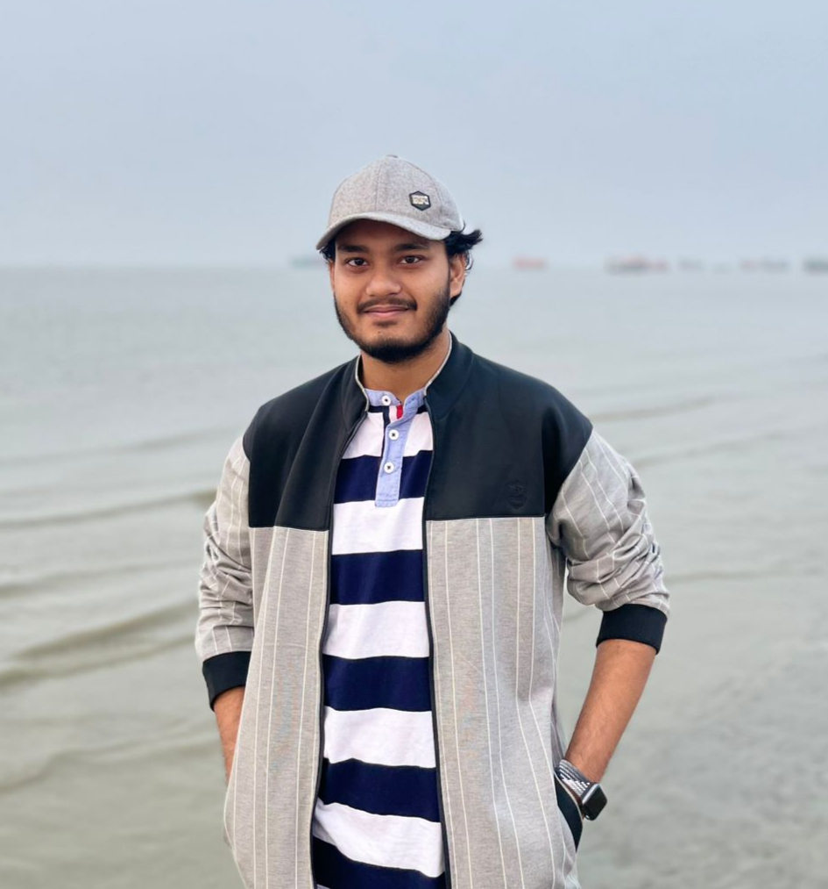

Research Assistant, BRAC University · Dhaka, Bangladesh
msayeedi212049 [at] bscse [dot] uiu [dot] ac [dot] bd
Hi! My name is Md. Faiyaz Abdullah Sayeedi. I finished my Bachelor of Science (B.Sc.) degree in Computer Science and Engineering (CSE) from United International University (UIU), Bangladesh. With a stellar academic background, I have actively contributed to UIU as a Grader and Undergraduate Teaching Assistant. I am currently a Research Assistant at BRAC University, where I work on AI-Powered Contradiction and Conflict Detection in Evolving Documents; building NLP pipelines that catch logical inconsistencies and temporal conflicts across document versions. Previously, I served as an AI Intern at Ontik Technology. I have experience in both academia and industry, allowing me to bridge theoretical research with practical implementation. I have published multiple peer-reviewed papers in international workshops, journals, and conferences.
⚽ When I am not immersed in code, datasets, or late-night paper submissions, I am likely cheering for my favorite football club. As a die-hard fan of Real Madrid, I follow every match with the same passion I bring to my research — Hala Madrid, siempre!
 When it is not football, it is a UFC fight night, a tennis five-setter, or a Formula 1
race weekend.
When it is not football, it is a UFC fight night, a tennis five-setter, or a Formula 1
race weekend.
- ⚽Football
- 🥋MMA UFC
- 🎾Tennis
- 🏎️Formula 1
- Research focus Natural Language Processing · Multilingualism · Representation Learning · Multimodal Learning
- Education B.Sc. in Computer Science and Engineering, United International University
- Published at ACLEMNLPEACLICLR*SEMCVPRNeurIPSIEEE AccessData in BriefApplied Sciences
- Academic service Reviewer — ACL Rolling Review, *SEM 2026, Springer Nature journals
- Previously MIRA Wing, CCDS, IUB · Ontik Technology · UIU
- 16Peer-reviewed papers
- 3Journal articles
- 13Conference & workshop
- 8Reviewing services
News scroll for the full timeline ↓
- 🔎 Aug 2026Invited to serve as a Reviewer for ACL Rolling Review (ARR) — August Cycle.
- 📄 Aug 2026Paper accepted to the Findings of EMNLP 2026: Many Dialects, Many Languages, One Cultural Lens: Evaluating Multilingual VLMs for Bengali Culture Understanding Across Historically Linked Languages and Regional Dialects.
- 🔎 May 2026Invited to serve as an Emergency Reviewer for ACL Rolling Review (ARR) — May Cycle.
- 📄 May 2026Paper accepted at the ACL 2026 Workshop on Multilinguality in the Era of LLMs (MeLLM): MultiHaluDet: Multilingual Hallucination Detection via LLM Hidden State Probing.
- 📄 May 2026Paper accepted at *SEM 2026, co-located with ACL 2026: Can LLMs Solve My Grandma's Riddle? Evaluating Multilingual Large Language Models on Reasoning Traditional Bangla Tricky Riddles.
- 🔎 Apr 2026Served as an Academic Reviewer for Communications AI & Computing, Springer Nature.
- 🔎 Apr 2026Served as an Academic Reviewer for the 15th Joint Conference on Lexical and Computational Semantics (*SEM 2026), organized and sponsored by SIGLEX (ACL) and co-located with ACL 2026.
- 📄 Apr 2026Paper accepted to the Findings of ACL 2026: Ready to Translate, Not to Represent? Bias and Performance Gaps in Multilingual LLMs Across Language Families and Domains.
- 📄 Apr 2026Paper accepted at the CVPR 2026 Workshop AI4RWC: VisText-Mosquito: A Unified Multimodal Dataset for Visual Detection, Segmentation, and Textual Explanation on Mosquito Breeding Sites.
- 🔬 Mar 2026Joined BRAC University as a Research Assistant.
- 🔎 Feb 2026Served as an Academic Reviewer for the Journal of Medical Systems, Springer Nature.
- 📄 Feb 2026Paper accepted at the EACL 2026 Student Research Workshop (SRW): Do Multi-Agents Solve Better Than Single? Evaluating Agentic Frameworks for Diagram-Grounded Geometry Problem Solving and Reasoning.
- 📄 Jan 2026Paper accepted to the Findings of EACL 2026: MathMist: A Parallel Multilingual Benchmark Dataset for Mathematical Problem Solving and Reasoning.
- 🏆 Nov 2025Received the Best Thesis Poster Award at the CSE Project Show, Spring 2024 (Final Year Design Project), United International University, Dhaka, Bangladesh.
- 🔎 Oct 2025Served as an Academic Reviewer for the BLP Workshop @ IJCNLP-AACL 2025.
- 📄 Sep 2025Paper accepted at the EMNLP 2025 Workshop HCI+NLP: Rethinking Search: A Study of University Students' Perspectives on Using LLMs and Traditional Search Engines in Academic Problem Solving.
- 🔎 Sep 2025Served as an Academic Reviewer for the International Journal of Data Science and Analytics, Springer Nature.
- 📄 Aug 2025Paper accepted at the IEEE Region 10 Conference (TENCON 2025): VisText-Mosquito: A Multimodal Dataset and Benchmark for AI-Based Mosquito Breeding Site Detection and Reasoning.
- 🎓 Jul 2025Defended my undergraduate thesis, Translation Tangles: Performance Benchmarking and Bias Detection in LLM-Based Translation Across Language Families and Domains.
- 📄 Jun 2025Journal paper accepted at IEEE Access: JailbreakTracer: Explainable Detection of Jailbreaking Prompts in LLMs Using Synthetic Data Generation.
- 🔎 May 2025Served as an Academic Reviewer for the MusIML Workshop @ ICML 2025.
- 🔬 May 2025Joined the MIRA Wing, CCD, Independent University Bangladesh (IUB) as a Research Assistant.
- 💼 Mar 2025Joined Ontik Technology as an AI Intern.
- 📄 Jan 2025Journal paper accepted at Data in Brief, Elsevier: ElectroCom61: A Multiclass Dataset for Detection of Electronic Components.
- 📄 Dec 2024Paper accepted at the NeurIPS 2024 Workshop MusIML: MIMIC: Multimodal Islamophobic Meme Identification and Classification.
- 📄 Sep 2024Paper accepted at IEEE TENSYMP 2024: MosquitoMiner: A Light Weight Rover for Detecting and Eliminating Mosquito Breeding Sites.
- 📄 Apr 2024First journal paper accepted at Applied Sciences (MDPI): A Comparative Analysis for Optimizing Machine Learning Model Deployment in IoT Devices.
- 🏅 Mar 2024Finalist — National Blockchain Olympiad Bangladesh.
- 📄 Feb 2024Paper accepted at ICEEICT 2024: BrailleSense: Deep Learning for Braille Character Classification.
- 🏆 Feb 2024Champion — Python for AI and ML Competition 2024, organized by the UIU App Forum, United International University, Dhaka, Bangladesh.
- 📄 Jan 2024Paper accepted at ICLR 2024 (Notable — Top 5%, Tiny Papers Track): MosquitoFusion: A Multiclass Dataset for Real-Time Detection of Mosquitoes, Swarms, and Breeding Sites Using Deep Learning.
- 📄 Mar 2023First conference paper accepted at IEEE InC4 2023: Fem-Scale: A Data-Driven Approach for Quantifying Degree of Individual Feminism Perspective.
Research Interests
-
Natural Language Processing
Machine translation, evaluation and benchmarking of large language models, and NLP pipelines for reasoning over evolving documents.
-
Multilingualism
Low-resource and dialectal languages, cross-lingual transfer, and the performance gaps models carry across language families.
-
Responsible AI
Bias detection, hallucination detection, jailbreak and safety analysis, and the interpretability of model internals.
-
Multimodal Learning
Vision–language models, cultural and dialectal grounding, and multimodal datasets that pair perception with textual reasoning.
Experience full CV →
- Research Assistant BRAC University — AI-Powered Contradiction and Conflict Detection in Evolving Documents March 2026 – Present
- Research Assistant MIRA Wing, CCDS, Independent University, Bangladesh (IUB) — Route, Retrieve, Reflect, Repair: An Agentic Framework for Self-Improving Medical Vision-Language Reasoning for Low-Resource Languages May 2025 – February 2026
- AI Intern Ontik Technology — Large Language Models, Retrieval-Augmented Generation and Agentic AI March 2025 – May 2025
- Undergraduate Teaching Assistant United International University — Artificial Intelligence, Data Structure and Algorithms 2, Introduction to Computer System November 2023 – January 2025
Academic Service
Reviewing, mentoring and teaching contributions.
-
Conferences & Workshops
ACL Rolling Review (August 2026, May 2026) · *SEM 2026 · BLP Workshop @ IJCNLP-AACL 2025 · MusIML Workshop @ ICML 2025
-
Journals
Communications AI & Computing · Journal of Medical Systems · International Journal of Data Science and Analytics — all Springer Nature
-
Mentoring & Teaching
Mentor for the Peer Mentorship Program, UIU Computer Club · Instructor for the Machine Learning session (CSE 4889), Computronix Academy Spring 2024, UIU App Forum
Contact
Happy to talk about research, collaborations, or anything in the papers above. Email is the fastest way to reach me.
Send a message
Contact details
- Email msayeedi212049@bscse.uiu.ac.bd
- Secondary email faiyazabdullah114708@gmail.com
- Phone +880 1704 054900
- Location Dhaka, Bangladesh